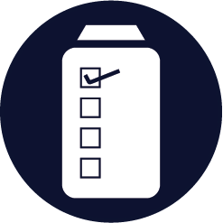

Usability Competencies
From April 20-25 2022, a usability test was performed for this website. Click the button below to view the usability report page that contains the test documents.
Competency 1

Goal 1
Usability Objective 1.1 :
Usability Artifact 1.1
Usability Objective 1.2 :
Usability Artifact 1.2
Usability Objective 1.3 :
Usability Artifact 1.3
Usability Objective 1.4 :
Usability Artifact 1.4
Usability Objective 1.5 :
Usability Artifact 1.5